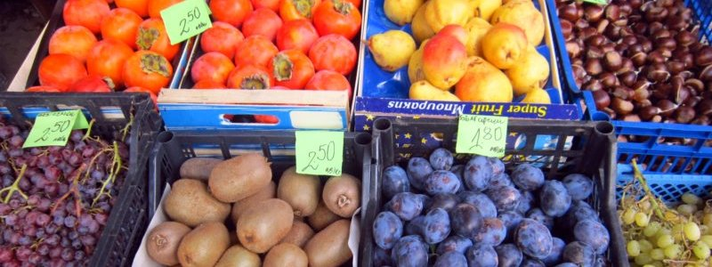

Психологески трикове в маркетинга
Случвало ли ви се е след направена покупка да се почуствате излъгани?
Триковете на маркетолозите може да ни побутнат да направим важна стъпка, но също да се заринем с ненужни вещи.
За да направим разликата още на момента, за да продаваме успешно, не пречи да познаваме психологията си и тази на потенциалните ни клиенти.
По- долу ще видим четири вида фактора, които повлияват на психологията ни, когато правим покупки:
Влияние на другия
Доверяваме се най- лесно на хора, а още повече ако ги познаваме.
Има два личностни типа, които могат да ни повлияят: хора с авторитет и хора с популярност.
Първите са най- често експерти- доктори в рекламата за нови лекарства, спортисти в рекламата за маратонки, но и майчинска фигура в реклама за пране. Тоест тук става дума за знания и умения, а не толкова за сертификати.
Другите са известните личности, които ни се струват симпатични или за пример. Затова сме готови да направим всичко за да приличаме на тях или за да живеем като тях, защото вярваме, както рекламистите искат, че изисканите/ творческите/ позитивните хора се познават по нещото, което те слагат пред очите ни.
С едните ни води желанието да се приближим до нормата, да не бием на очи, да не се излагаме с невежество или стари, демодирани вещи.
С другите ни води желанието за сравнение, защото вярваме, че чрез имитация ще постигнем начина на живот, фигурата или самочувствието, които желаем.
Обществото ни е построено на реципрочност- когато някой ни направи услуга, дори и съвсем малка, имаме подтик да я върнем.
Освен за изчистване на дългове, тук става въпрос също за постоянство- ако се съгласим да направим нещо дребно, сме много по- склонни да направим нещо, което бихме отказали по принцип.
Дори да кажем не отначало, ако търговецът се интересува и обори възраженията ни, сме склонни в крайна сметка да се съгласим заради отделеното време и внимание.
Затова писачите на реклами търсят как да ви накарат да кимате. Щом се съгласявате с едно твърдение (дори то да привидно да ви отдалечава от покупка), първо чувствате, че ви разбират и второ би следвало да се съгласите със следващото твърдение, което произтича от предишното или е решението на проблема, който сте разпознали.
Влияние на физическата среда
Всички знаем, че супермаркетите използват трикове, за да ни накарат да купуваме повече, но как точно го правят.
Първо, слагат основните храни като хляб и мляко в дъното, защото така ще трябва да минем и покрай другите щандове. А когато пък чакаме на касата, по- лесно бихме се изкушили с десертчета, дъвки и други дреболии, които са разположени там.
За да харчим, при подредбата на нивото на очите се поставят по- скъпите стоки. Зърнените закуски със забавни герои пък са малко по- долу, за да са на нивото на дечицата.
По- бавната музика ни кара да губим повече време в обикаляне на магазините, а по- бързото темпо да взимаме бързи решения.
Познато ви е въздействието на миризмите, ако сте минавали покрай пекарна или ресторантче със скара или пържени картофки. В зависимост от целта на бизнеса се ползват успокояващи (лавандула) или стумилиращи (цитрусови) аромати.
Влияние на цената
Човешкият мозък често си изважда изводи прибързано: понякога те му спасяват живота, понякога го подвеждат.
Същото са открили и продавачите, които слагат цени като 1,99 лв. например, които ние възприемаме като по- близки до един лев отколкото до два, въпреки че вече трябваше да сме си взели поука. Трика с 99-те стотинки работи, въпреки че отдавна трябваше да се е изтъркал.
Освен от цената, колко сте готови да дадете за диск например зависи от цената на тениските в съседния магазин. Този факт- че предишни образи и идеи, на които сме подложени непосредствено преди дадено преживяване влияят на начина, по който интерпретираме събитието или представения предмет, е добре познат на психолозите. При експеримент, на една група преди пазар са показани снимки на удобни мебели, а на друга на монети; впоследствие при избора си повечето от първата група гледат удобството, а втората- цената. Това явление се нарича прайминг.
Колко ще дадем зависи също от останалите опции, а по- конкретно от първата, която срещнем. Хората ще дадат повече пари, ако едновременно им представите по- скъп артикул; така това става цената ни по подразбиране. Това явление се нарича анкъринг. Затова немалко сайтове в днешно време предлагат три опции. Най- скъпата обикновено включва някакъв личен контакт и съответно изисква някаква част от времето ни. Тя служи за да направи по- привелекателна средната опция, която изисква по- малко усилия от наша страна, но предлага повече стойност от най- евтината. А третата, скромна опция, служи да не губим клиенти, които в момента нямат достатъчно бюджет за предпочитаната опция.
Сама по себе си цената няма толкова значение. Затова и безспорно хората понякога купуват, а понякога- не, въпреки че продуктът е на една и съща цена. Така става, ако едната е с намаление, а другата е стандартната цена. Интелигентността не значи рационалност. За жалост, отношението ни към парите има и немалък емоционален компонент.
Друг трик, който противоречи на интуицията, е дали оригиналната или намалената цена да е с по- малък размер. Не е ли по- добре ясно да се вижда намалената цена. Излиза, че не! Цени с по- дребен шрифт ни се струват по- малки, независимост от числото. Ако предлагате отстъпка пък шансът за покупка е по- голям, ако е лесно да се пресметне колко е.
Дотук видяхме някои типични трикове, но знаете ли, че цени, които имат елемент от познати или лични цифри като датата на рождения ви ден, или текущата година, или звучащи като името, ви са по- атрактивни. Например цени започващи с пет, ако се казвате Петя, или със седем, ако името ви е Севдалин. Не е ли невероятно? Кой би се сетил освен психолозите, които всячески се мъчат да ни накарат да купуваме?
Влияние на нагласата
В книгата си за убеждаване, известният професор Робърт Чалдини говори освен за явленията, за които споменахме по- горе и за недостига. Това е когато рекламите ви приканват да купите преди изчерпване на количествата или преди някакъв срок.
Друг трик на търговците е когато слагат продукта в ръцете ви (тестови обиколки с коли, демо, мостри). Така може да си представите, че вече го притежавате.
Този жест има двоен ефект, защото ние, хората по- скоро се боим да не загубим това, което имаме, отколкото се вълнуваме да спечелим повече.
Случвало ли ви се е при първото слушане някоя песен да ви се струва посредствена, но като я чуете по радиото за стотен път да си кажете "Хм, не е толкова зле" и да затанцувате. Това е ефектът на познатото. Може да си мислите, че броят пъти, който виждате плакат или промоклип не влияе на отношението ви, но ако любимата ви марка я няма в магазина- кое бихте взели- рекламираната или непознатата марка. Точно така- познатото зло!
Търговците често чуват, че задачата им е да накарат потенциалния клиент да каже "да". Но да кажеш "не" означава, че си се предпазил, така че не е толкова лошо да получите няколко отказа в началото на разговора. Първо, ако не сте се отказали получавате по- ясна представа за нуждите на потенциалния купувач, а също следващата ви молба има по- голям шанс за успех.
Случвало ли ви се е да седнете в ресторант, а келнерът да ви попита "Бяло или червено вино ще пиете?". Този прост въпрос вече променя нагласата ви от дали да поръчате, а дали ще бъде това или онова. Когато сравнявате две неща- вече мислите кое да купите, а не дали изобщо да купувате. Шансът за покупка е по- голям!
Но в тази връзка, сведете гамата си до най- необходимото, например стандартен модел и по- особен модел, защото парадоксът на избора диктува, че ако има прекалено много варианти, между които да се колебаем, по- скоро не бихме купили нищо. Ако е необходимо да имате по- голямо разнообразие, отделете вариантите по категории.
Проучванията показват, че при рекламата по- ефикасно е да покажем първо продукта, а после да предизвикаме емоциите, с които искаме да го асоцираме. Има много свежи или трогателни клипчета, но като се опитаме да си спомним какво рекламират паметта ни отказва.
Добрата история не винаги значи добра реклама.
Ако тези трикове са ви заинтигували, не пропускайте стратегическата страна в пълното обучение по маркетинг.